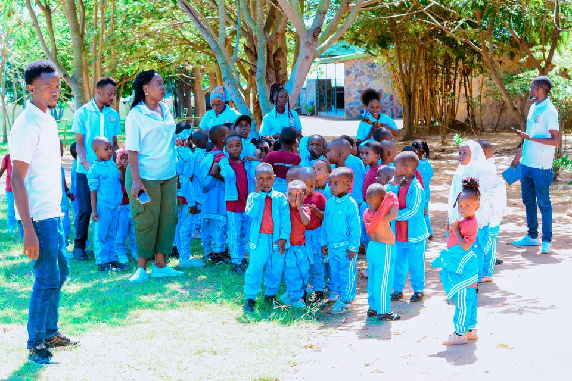

Our mission
To provide safe, attentive and practical education that builds strong foundations in learning, character and responsibility.
Our school
Jupe Hills is a co-educational daycare, pre-primary and primary school in Ibaya, Buswelu. Children of every religion, race and background are welcome here.
Our story
Jupe Hills was established in 2016 to give families around Ibaya and Buswelu a close, dependable place for early learning and primary education. The school has grown from its local roots while keeping a simple promise: every child should be known, taught carefully and treated with dignity.
Today, we welcome children from age two in daycare and teach through primary school. We work with families so that learning at school is reinforced by confidence and good habits at home.

To provide safe, attentive and practical education that builds strong foundations in learning, character and responsibility.
To see today’s learners grow into capable, kind and confident leaders in their families and communities.
What guides us
We listen, use kind words and value every person.
We ask questions and learn by doing.
We care for our work, one another and our environment.
We welcome children of all religions, races and backgrounds.

A warm welcome
Welcome to Jupe Hills. We are a school with a simple promise: your child will be known here. We teach children to read, count, ask questions and look after one another. Our doors are open to every family, whatever your religion or background. Come and see the school for yourself; you are welcome on any school day. We would be glad to show you around and answer your questions.
Ms. Faith Nyagwaswa
Head Teacher Name to be confirmed
Why families choose us
Teachers know their pupils and can notice where support is needed.
Care and learning begin from age two, with a steady path into primary.
Every family is welcomed with respect for their faith and background.
Trips, ceremonies, sport and shared routines build wider confidence.
Facilities
Class spaces arranged for age-appropriate lessons, group work and guided practice.
Open space for supervised play, physical activity and school gatherings.
Daily structures support younger children through meals, rest and care.
Books, writing resources, number materials and teacher-prepared activities.